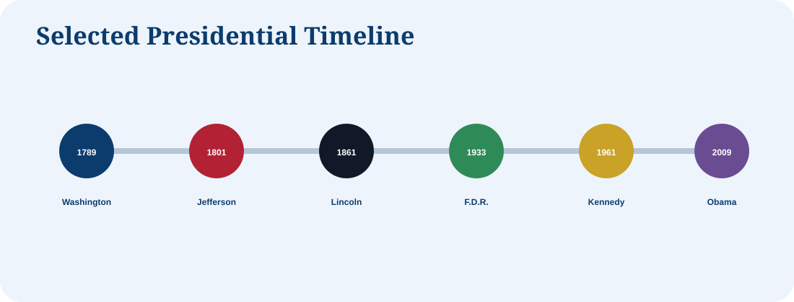

1
George Washington
1789–1797
No party
Built the presidency and set the two-term tradition.
Historical reference
A starter gallery of Presidents most relevant to U.S. history and the citizenship test. Later releases can expand this to all Presidents with portraits and timelines.

Featured Presidents
1789–1797
No party
Built the presidency and set the two-term tradition.
1801–1809
Democratic-Republican
Oversaw the Louisiana Purchase and expanded the nation.
1861–1865
Republican
Preserved the Union and issued the Emancipation Proclamation.
1901–1909
Republican
Promoted conservation and progressive reform.
1933–1945
Democratic
Led through the Great Depression and World War II.
1953–1961
Republican
World War II general and Interstate Highway System President.
1961–1963
Democratic
Inspired public service and led during the Cuban Missile Crisis.
1963–1969
Democratic
Signed major civil rights and voting rights legislation.
1981–1989
Republican
Shaped modern conservatism and Cold War politics.
2009–2017
Democratic
First African American President and signed the Affordable Care Act.
2017–2021, 2025–present
Republican
Second non-consecutive presidency, after Grover Cleveland.
USCIS focus